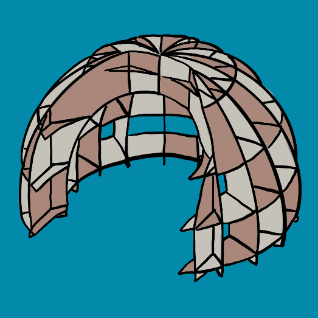

The Elfshelf

Inception
While attending a class titled "From Play to Innovation" hosted by Stanford University's Hasso Plattner Institute of Design (also known as the d.school), I encountered this open-ended design problem, posed as a class project: "How could Scholastic Book Fairs be more playful?"
Concept
A custom shaped bookshelf (one of a proposed series) designed to create a semi-private, child-sized space for exploring book titles and reading. An unusual structure intended to inspire the imagination, foster a sense of comfort,and also, of course, to hold books.
Tools
|
Materials
|